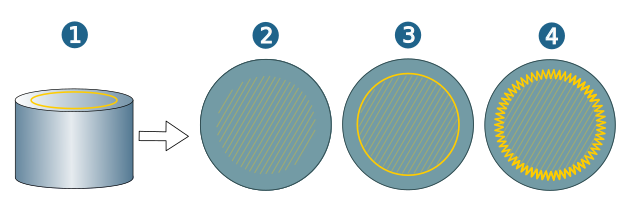
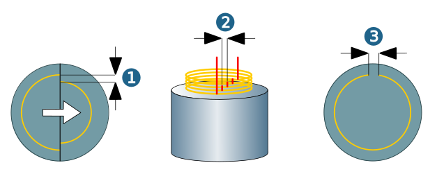
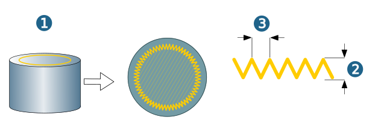
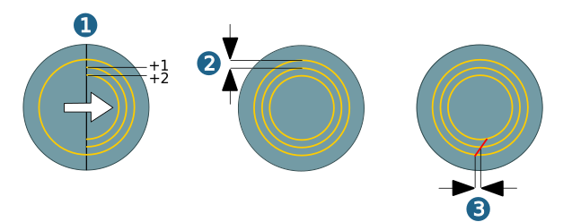
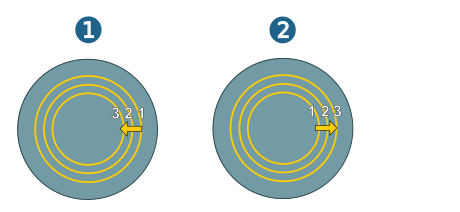
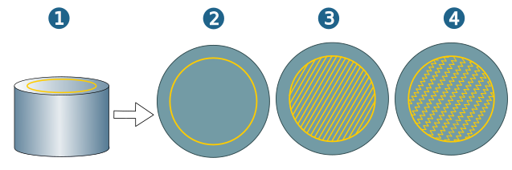
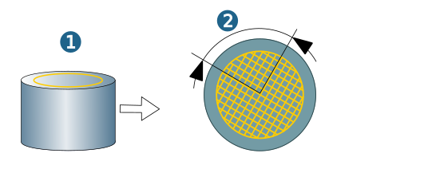
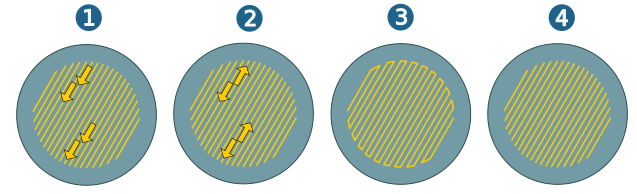
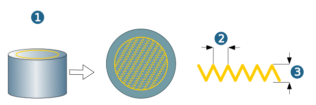
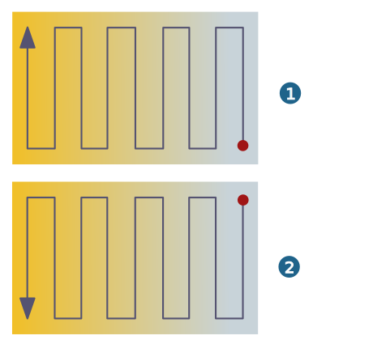

Additive
Peripheral Path
Mode: Starting from a reference job (1), this defines the method for creating the additive peripheral path. Select the None option if no peripheral path is to be generated (2). The Standard function causes hyperMILL to generate a standard peripheral path (3). Use Weave to create a zigzagging peripheral path (4).
|  |
Side allowance (1): Generate an allowance for the peripheral path. Negative values increase the peripheral path, while positive values reduce it.
Start displacement (2): Shifting the start point of the peripheral path from one Z-plane to the next.
Close gap offset (3): On a closed reference path, this defines the distance left open to avoid overbuild at start position/end position.
|  |
Weave width (2): Width of the zigzag bounding path.
Weave pitch (3): Pitch of the zigzagging peripheral path.
(1) = Reference job.
|  |
Additional peripheral path
Count (1): Additional paths are added to the bounding path. Define the Count of additional paths.
Stepover (2): Define the horizontal stepover of the additional paths.
Start displacement (3): Moves the starting point of the additional paths. The tool begins with the start point shifted by this value.
|  |
Order: Set the machining order for the additional paths. Use the Outside-in option (1) to execute the additional paths from the outside to the inside. Use the Inside-out option (2) to execute the additional paths from the inside to the outside.
|  |
Infill
Note
A closed reference path is the prerequisite for generating a toolpath.
Mode: Starting from a reference job (1), define the method for creating the additive fill path. Select the None (2) option if no infill is to be created. When the Standard (3) function is used,hyperMILL generates a standard infill. Use Weave (4) to create a zigzag infill.
|  |
Side allowance (2): Starting from a peripheral path (1), generate an allowance for filling. Negative values increase the filling, while positive values reduce it.
Horizontal Stepover (3): Define the horizontal stepover of the fill paths.
 |
Starting angle (2): Starting from a reference job (1), define the starting angle for the alignment of the filling in relation to the X-axis of the job frame.
Angle increment (3): Enlarge the angle for aligning the toolpaths from one Z-plane to the next.
|  |
Oneway: (1): Activate if the tool should always move in the same direction. (2) Option not activated.
Continuous infill (3): Activate if the material infill should also take place during repositioning. (4) Option not activated.
|  |
Weave width (2): Width of the zigzag toolpath.
Weave pitch (3): Pitch of the zigzag toolpath.
(1) = reference job.
|  |
Priority
Defines the processing sequence for generating peripheral and infill paths.
Peripheral path first: The peripheral path is executed first.
Filling first: The filling is executed first.
 |
Options
Invert direction by layer: The material application begins after each applied layer on the colder side of the element to be manufactured or repaired. In addition, the direction of the material application is changed from layer to layer. Advantage: even material application, no ‘sagging’ on the colder side. (1) First layer, (2) Second layer.
Note
The Invert direction by layer option affects both the Infill and the Peripheral Path.
|  |
Sorting of the contours when using the option Bottom to top:
-
By layer: If no drive surface is selected, the toolpaths with the same Z value in respect to the job frame are grouped in a layer. If a drive surface is selected the toolpaths with the same distance to the drive surface are grouped in a layer.
-
The contours are afterward grouped by column: This is done by evaluating the distance of the contours on the current layer to the contours of the previous layer.
Application: If the Bottom to top option is selected, hyperMILL first applies the material to the contours of the first layer. The same happens in the second layer. The sequence of the contours of the second layer is determined by the column information.
Note
The sequence of the contours in the first layer is defined by the sequence of the contours belonging to the first layer in the reference job.
Invert column sequence by layer: The deposition sequence of the columns is inverted every second layer.
In the example below, in the first layer (A), the material is applied following the sequence: 1, 5, 2, 4, 3.
In the second layer (B), the sequence is changed as follows: 5, 1, 4, 2, 3.
Advantage: Long repositioning movements can be avoided. Particularly suitable for large parts where the risk of the material overheating during the additive process is low.
 |
3D shape
Drive surfaces: Select one drive surface to generate a 3D filling parallel to the selected surface and / or to control the tool vector (i.e. the tool inclination).
Use frame: The orientation of the normal of the drive surface is defined by the Z-axis of the job frame.
Modify strategy
Axial retract: The tool is retracted along its axis from its reference toolpath position (minus the offset) until it is free of collision against the model.
The distance of the reference path to the drive surface is considered during the retract. This distance is used to retract the tool further (after the initial retract where the tool is retracted until it is free of collision against the model).
The second retract is used to create layers parallel to the model with a spacing corresponding to the distance between the reference path and the drive surface.
Offset: Offset or pre-shift of the tool along its axis before applying the axial retract.
Max. retract distance: The maximum distance for the axial retract movement.